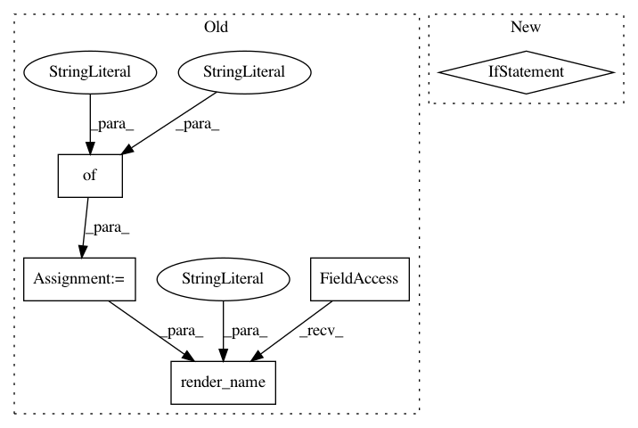

c7e6e4cfd90d2d05bb9c9dffd519b32e9a1f15f6,src/python/pants/reporting/html_reporter.py,HtmlReporter,start_workunit,#HtmlReporter#Any#,81
Before Change
self._linkify_memo)
// Create the template arguments.
args = {"indent": len(workunit.ancestors()) * 10,
"html_path_base": self._html_path_base,
"workunit": workunit_dict,
"header_text": workunit.name,
"initially_open": is_test or not (is_bootstrap or is_tool or is_multitool),
"is_tool": is_tool,
"is_multitool": is_multitool}
args.update({"collapsible": lambda x: self._renderer.render_callable("collapsible", x, args)})
// Render the workunit"s div.
s = self._renderer.render_name("workunit_start", args)
if is_tool:
// This workunit is a tool invocation, so render the appropriate content.
// We use the same args, slightly modified.
After Change
parent_id=workunit.parent.id if workunit.parent else "",
workunit=workunit,
icon_caret="down" if initially_open else "right",
display_class="" if initially_open else "nodisplay",
icon="cog" if is_tool else "cogs" if is_multitool else "none"
)
self._emit(s)
In pattern: SUPERPATTERN
Frequency: 3
Non-data size: 5
Instances
Project Name: pantsbuild/pants
Commit Name: c7e6e4cfd90d2d05bb9c9dffd519b32e9a1f15f6
Time: 2015-10-23
Author: benjyw@gmail.com
File Name: src/python/pants/reporting/html_reporter.py
Class Name: HtmlReporter
Method Name: start_workunit
Project Name: pantsbuild/pants
Commit Name: c7e6e4cfd90d2d05bb9c9dffd519b32e9a1f15f6
Time: 2015-10-23
Author: benjyw@gmail.com
File Name: src/python/pants/reporting/html_reporter.py
Class Name: HtmlReporter
Method Name: _render_message
Project Name: pantsbuild/pants
Commit Name: c7e6e4cfd90d2d05bb9c9dffd519b32e9a1f15f6
Time: 2015-10-23
Author: benjyw@gmail.com
File Name: src/python/pants/reporting/html_reporter.py
Class Name: HtmlReporter
Method Name: end_workunit